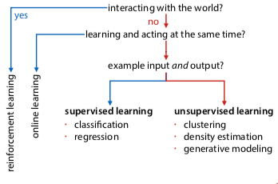

Deductive vs inductive reasoning:
ML lets systems learn and improve from experience without being explicitly programmed (for a specific situation).
Used in software, analytics, data mining, data science, statistics.
Problem is suitable for ML if we can't solve it explicitly.
Why don't we have explicit solutions? Sometimes could be expensive, or could change over time, or other reasons.

An intelligent agent:
Offline learning: separate learning and acting
Supervised: explicit examples of input and output. Learn to predict output for unseen input.
learning tasks:
how do you reduce a problem to classification? e.g. every pixel in a grayscale image is a feature, label each feature
classification: output labels are classes (categorical data)
linear classifier: just draw a line, plane, or hyperplane
decision tree classifier: every node is a condition for a feature, go down branch based on condition. would look like a step function in a graph.
k-nearest-neighbors: lazy, doesn't do anything, just remembers the data (?? have to look this up in more detail)
features: numerical or categorical
binary classification: only have two classes
multiclass classification: more than two classes
regression: output labels are numbers. the model we're trying to learn is a function from feature space to ℜ
loss function: maps model to number that expresses how well it fits the data
common example:
takes difference between model prediction and target value (residual), then square and sum all residuals
overfitting: the model is too specific to the data, it's memorizing the data instead of generalizing
split test and training data. don't judge performance on training data, the aim is to minimise loss on test data.
Unsupervised: only inputs provided, find any pattern that explains something about data.
learning tasks:
ML is a subdomain of AI.